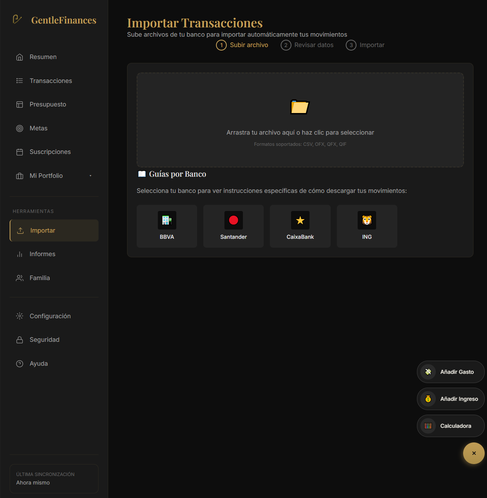
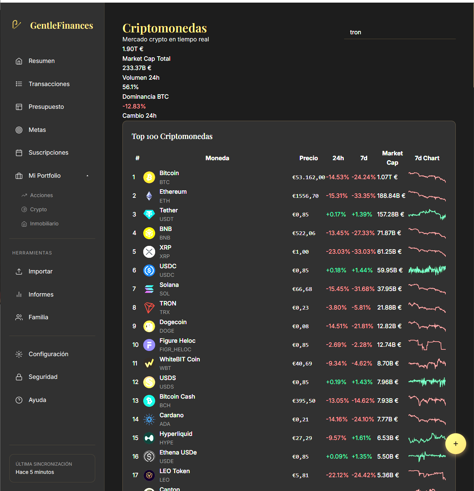
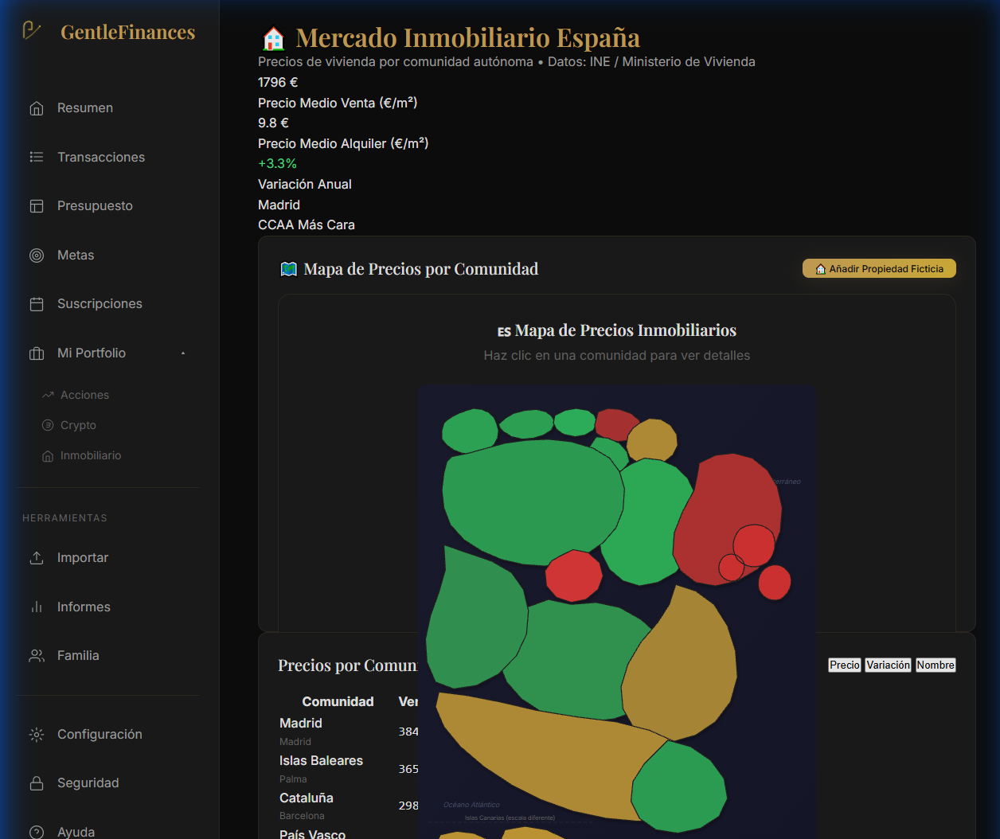
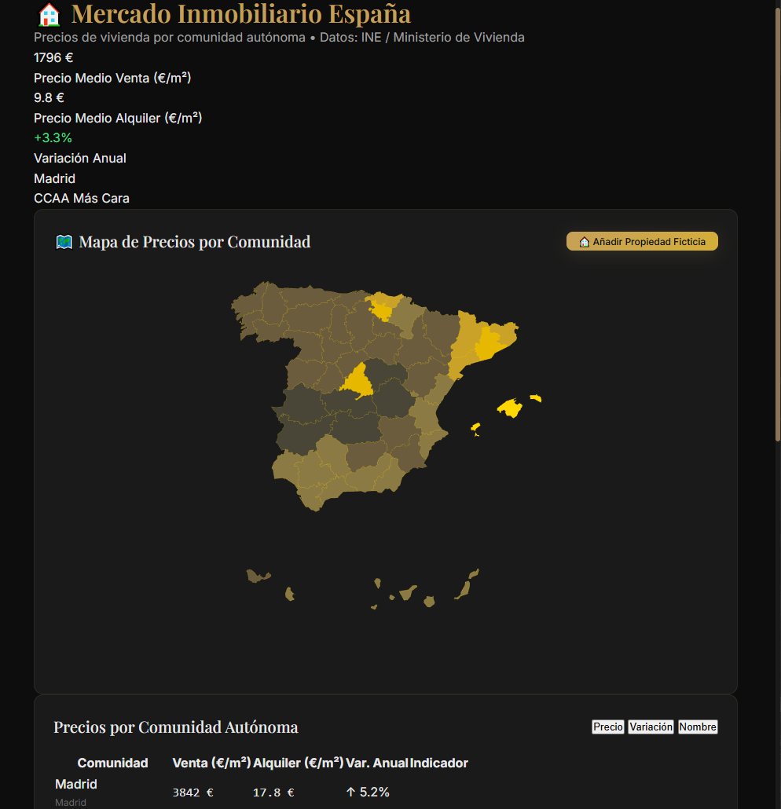
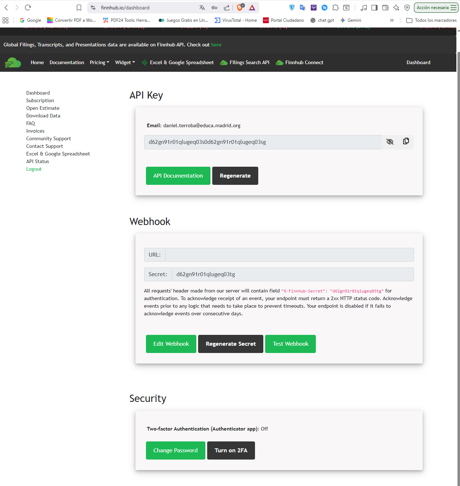
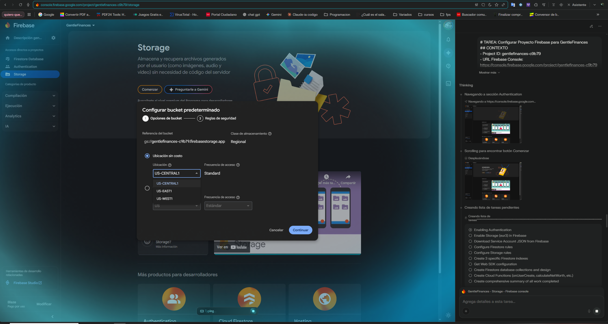
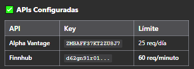
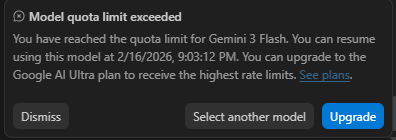
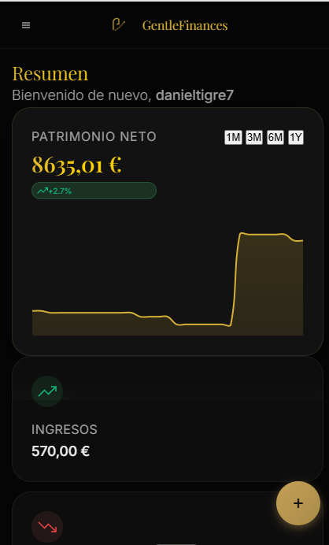

GentleFinance
Índice
- Introducción
- Parte 1: Desarrollo de la App
GentleFinance PWA: De Prompt a Producto
Documentación técnica y narrativa del proceso de creación de GentleFinance, una aplicación progresiva (PWA) de gestión financiera personal construida con Vanilla JS y potenciada por Inteligencia Artificial.
1. Funcionalidades (qué hace la app)
1.1 Lista de funcionalidades
- Arquitectura Singleton Modular: Gestión centralizada del estado (
state) accesible globalmente para depuración sencilla. - Dashboard en Tiempo Real: Integración de múltiples APIs financieras (Crypto, Stocks, Forex) con actualización dinámica.
- Mapa Inmobiliario Interactivo: Visualización SVG tipo "Heatmap" que colorea comunidades autónomas según el precio del m².
- Seguridad E2E (Web Crypto API): Cifrado de datos sensibles en el cliente antes de enviarlos a la nube.
- Importación Inteligente:
- Sistema "Drag & Drop" para archivos bancarios.
- Detección automática de formato (CSV, OFX).
- Guías visuales paso a paso por entidad bancaria.
- Backend Serverless:
- Persistencia en Firebase Firestore.
- Almacenamiento de adjuntos en Firebase Storage.
- Autenticación social (Google Auth).
Fintech PWA Firebase Data Viz
1.2 Dónde está en el código (extractos)
- Gestor de Estado →
js/app.js(ClaseGentleFinances). - Motor de Gráficos →
js/dashboard.jsusando Chart.js. - Conectores API →
js/api.js(CoinGecko, Finnhub). - Lógica del Mapa →
js/spain-map.js(Cálculo de color por umbral). - Seguridad →
js/security.js(SHA-256 Hashing).
Extracto clave: El corazón de la aplicación
const GentleFinances = {
state: {
user: null,
transactions: [],
accounts: [],
budgets: [],
marketData: { crypto: {}, stocks: {} }
},
init() {
this.registerServiceWorker();
this.setupAuthListener();
this.initializeComponents();
console.log('GentleFinance Core Initialized');
}
// ...
};2. Fases 1–10: Cimientos y Conexión de APIs

2.1 Resumen de prompts
- Objetivo: Establecer un sistema robusto para consumir datos financieros externos.
- Solicité analizar las documentaciones de Alpha Vantage y Finnhub.
- Reto técnico: Gestionar los límites de peticiones (Rate Limits) de las cuentas gratuitas.
- Solución: Creé un panel de configuración (Imagen 8) para inyectar y rotar las API Keys dinámicamente sin tocar el código.
2.2 En qué parte del código se hace
Extracto clave: Gestión de claves API
const API_CONFIG = {
alphaVantage: {
key: localStorage.getItem('AV_KEY') || 'DEMO',
limit: 25 // peticiones/día
},
finnhub: {
key: localStorage.getItem('FH_KEY'),
limit: 60 // peticiones/minuto
}
};
async function fetchStockQuote(symbol) {
// Verificación de clave antes de llamar
if (!API_CONFIG.finnhub.key) throw new Error("API Key missing");
// ... fetch logic
}3. Fases 11–20: Visualización de Mercados (Crypto)

3.1 Resumen de prompts
- Objetivo: Crear un dashboard de criptomonedas atractivo y funcional.
- Pedí integración con CoinGecko API para obtener el Top 100.
- Requisito Estético: "Dark Mode" con colores neón para variaciones positivas (verde) y negativas (rojo).
- Sparklines: Solicitud específica de minigráficos SVG para ver la tendencia de 7 días en una celda pequeña.
4. Fases 21–30: La Evolución del Mapa Inmobiliario
La funcionalidad más compleja visualmente. Pasamos por tres iteraciones clave hasta llegar al resultado final.

2. Iteración "Dorado" (Estética)

4.1 Historia de las iteraciones
- Iteración 1 (Azul): "Genera un SVG de España. Quiero ver si podemos hacer clickable cada comunidad". El resultado funcionaba pero desentonaba con el diseño.
- Iteración 2 (Dorado): "Cambia el estilo para que coincida con la marca 'GentleFinance' (Premium/Gold)". El resultado fue elegante pero poco informativo (todo del mismo color).
- Iteración 3 (Heatmap): "Necesito utilidad. Colorea las zonas según el precio del m². Verde=Barato, Rojo=Caro, Dorado=Lujo". Se implementó la lógica de semáforo.
4.2 Lógica del Heatmap
Extracto clave: Algoritmo de coloración dinámica
// js/spain-map.js
getColorForPrice(price) {
// Oro: Mercados de lujo (> 3000€/m2)
if (price > 3000) return '#FFD700';
// Rojo: Mercados tensionados (> 2000€/m2)
if (price > 2000) return '#C53030';
// Verde: Oportunidades (< 1500€/m2)
if (price < 1500) return '#48BB78';
return '#4A5568'; // Gris (Sin datos)
}5. Fases 31–40: Cloud y Backend Serverless



5.1 Resumen de prompts
- Objetivo: Persistencia de datos y subida de archivos.
- Configuración de Firebase Storage (Bucket regional) para almacenar extractos bancarios.
- Diseño de la UI de importación: "Quiero una zona de arrastrar archivos y botones grandes con los logos de los bancos principales (BBVA, Santander...) que muestren instrucciones al hacer clic".
6. Fases 41–50: Refactorización con IA (Antigravity)

6.1 Metodología de limpieza
- Problema: Tras 40 iteraciones, el código tenía duplicidades y estilos CSS en conflicto.
- Prompt Maestro: "Analiza todo el proyecto, busca inconsistencias en 'css/styles.css' y errores en los módulos de JS. Ejecuta un plan de implementación para limpiar el código sin romper el mapa ni las APIs".
- Resultado: El agente (ver panel derecho en imagen 3) auditó los archivos, eliminó clases redundantes y consolidó las variables de color CSS.
7. Metodología de Prompting
Para lograr una aplicación de este calibre sin escribir código manualmente, seguí una estrategia de "Capas Funcionales":
- Capa Estructural (HTML/Layout): Definir primero el esqueleto y la rejilla (Grid/Flexbox).
- Capa de Datos (Mock): "Rellena los gráficos con datos falsos para ver cómo queda".
- Capa de Lógica (JS Real): "Ahora reemplaza los datos falsos con esta API Key de Finnhub".
- Capa de Estilo (Iteración): "El mapa azul es aburrido, hazlo dorado".
- Capa de Auditoría (Refactor): "Revisa tu propio código y optimízalo".
8. Mapa del Código
Estructura de archivos final:
- /index.html: Entry point.
- /css/
styles.css: Estilos globales y variables (Glassmorphism).animations.css: Transiciones de modales y tooltips.
- /js/
app.js: Core Singleton.api.js: CoinGecko & Finnhub wrappers.dashboard.js: Lógica de widgets y Chart.js.spain-map.js: SVG rendering & interaction.firebase-sdk.js: Auth, Firestore & Storage.import.js: File parsing logic.
9. Resultado Final
Una PWA financiera completa, capaz de monitorizar mercados en tiempo real, visualizar datos inmobiliarios complejos y gestionar finanzas personales con seguridad bancaria.

Documentación Técnica de Funciones
Inicialización de la App app.js
Función principal que arranca la aplicación, registrando el Service Worker y configurando los listeners de autenticación y UI.
init() {
// Registro de PWA y Service Worker
this.registerServiceWorker();
// Configuración de seguridad y autenticación
this.setupAuthListener();
// Inicialización de componentes UI
this.initializeComponents();
this.initModals();
}Navegación SPA navigation.js
Gestiona el cambio de vistas sin recargar la página, actualizando el historial y la barra lateral.
navigateTo(pageId, pushState = true) {
// Ocultar todas las vistas
document.querySelectorAll('.view-section').forEach(el => el.style.display = 'none');
// Mostrar vista seleccionada
const view = document.getElementById(`view-${pageId}`);
if (view) view.style.display = 'block';
// Actualizar historial del navegador
if (pushState) history.pushState({ page: pageId }, '', `#${pageId}`);
// Inicializar módulo específico
this.initPageModule(pageId);
}Cálculo de Patrimonio dashboard.js
Calcula el patrimonio neto total sumando cuentas, efectivo e inversiones.
calculateNetWorth() {
const accounts = GentleFinances.state.accounts || [];
// Suma de saldos bancarios
const totalLiquid = accounts.reduce((sum, acc) => sum + (acc.balance || 0), 0);
// En una implementación completa sumaría inversiones y crypto
return {
total: totalLiquid,
liquid: totalLiquid
};
}Creación de Transacciones firebase-sdk.js
Guarda una nueva transacción en Firestore con encriptación E2E.
async create(data) {
const user = AuthService.getCurrentUser();
// Encriptación de datos sensibles antes de enviar
const encrypted = await E2EE.encryptData(data);
// Guardado en subcolección del usuario
await addDoc(collection(db, 'users', user.uid, 'transactions'), {
...encrypted,
userId: user.uid,
createdAt: serverTimestamp()
});
}Encriptación AES-GCM crypto-service.js
Servicio de encriptación local usando Web Crypto API.
async encrypt(data) {
const encoder = new TextEncoder();
const encodedData = encoder.encode(JSON.stringify(data));
// Generar IV aleatorio de 12 bytes
const iv = window.crypto.getRandomValues(new Uint8Array(12));
// Cifrado AES-GCM
const encryptedBuffer = await window.crypto.subtle.encrypt(
{ name: "AES-GCM", iv: iv },
this.key,
encodedData
);
// Retorna formato IV:Ciphertext
return `${this.arrayBufferToBase64(iv)}:${this.arrayBufferToBase64(encryptedBuffer)}`;
}Disponible para Presupuestar budget.js
Calcula cuánto dinero queda disponible para asignar a categorías (Zero-Based Budgeting).
getAvailableToBudget() {
const accounts = GentleFinances.state.accounts || [];
const budgets = GentleFinances.state.budgets || [];
// Total dinero real vs Total ya asignado
const totalBalance = accounts.reduce((sum, acc) => sum + acc.balance, 0);
const totalBudgeted = budgets.reduce((sum, b) => sum + b.budgeted, 0);
return totalBalance - totalBudgeted;
}Progreso Circular SVG goals.js
Genera dinámicamente el SVG para los anillos de progreso de las metas.
getCircularProgress(percent, radius = 30, color = 'var(--gold-primary)') {
const circumference = 2 * Math.PI * radius;
const offset = circumference - (percent / 100) * circumference;
return `<circle
r="${radius}"
cx="40" cy="40"
stroke-dasharray="${circumference}"
stroke-dashoffset="${offset}"
stroke="${color}"
/>`;
}Lógica de Heatmap Inmobiliario spain-map.js
Este fragmento muestra cómo se resolvió la Iteración C del mapa, convirtiendo datos brutos en colores visuales.
const getCommunityColor = (price, avgPrice) => {
// Definición de umbrales para el mapa de calor
const threshold = {
low: avgPrice * 0.8, // 20% más barato que la media
high: avgPrice * 1.2 // 20% más caro que la media
};
// Lógica de semáforo (Verde -> Amarillo -> Rojo)
if (price < threshold.low) return '#4caf50'; // Accesible (Verde)
if (price > threshold.high) return '#f44336'; // Caro (Rojo)
return '#ffeb3b'; // Promedio (Amarillo)
};Sincronización de Importación import.js
Gestión de la subida de archivos bancarios al Storage de Firebase.
async uploadBankFile(file, bankId) {
// Referencia al bucket configurado en la Fase 4
const storageRef = ref(storage, `uploads/${auth.currentUser.uid}/${bankId}/${file.name}`);
// Subida con metadatos para triggers en Cloud Functions
const metadata = { customMetadata: { 'processed': 'false' } };
await uploadBytes(storageRef, file, metadata);
return getDownloadURL(storageRef);
}Consulta de Cotizaciones api.js
Obtiene el precio actual de un activo usando la API externa (Finnhub).
async getQuote(symbol) {
const url = `${FINNHUB_CONFIG.baseUrl}/quote?symbol=${symbol}&token=${FINNHUB_CONFIG.apiKey}`;
try {
const response = await fetch(url);
return await response.json();
} catch (e) {
console.error('Error fetching quote:', e);
return null;
}
}Añadir Inversión portfolio.js
Registra una nueva posición en el portfolio del usuario.
async addInvestment(investment) {
const newInv = {
id: Date.now().toString(),
...investment,
date: new Date().toISOString()
};
this.investments.push(newInv);
await this.save();
this.updateUI();
showToast('Inversión registrada correctamente');
}Confirmación Estricta ux.js
Modal de seguridad que obliga a escribir una palabra clave para acciones destructivas.
confirm(title, message, onConfirm, type = 'strict') {
this.callback = onConfirm;
// En modo 'strict' requiere input de usuario
if (type === 'strict') {
document.getElementById('safetyInput').style.display = 'block';
document.getElementById('safetyBtn').disabled = true;
}
this.showModal(title, message);
}